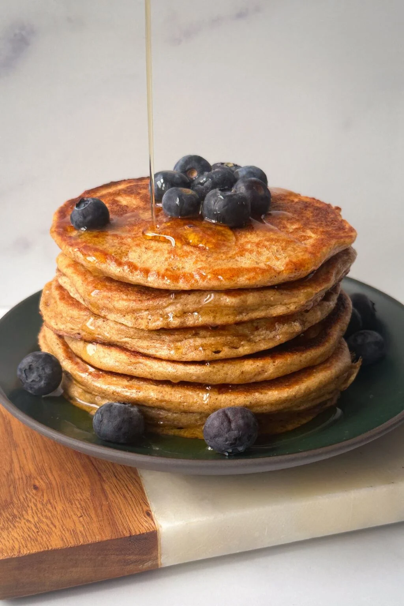
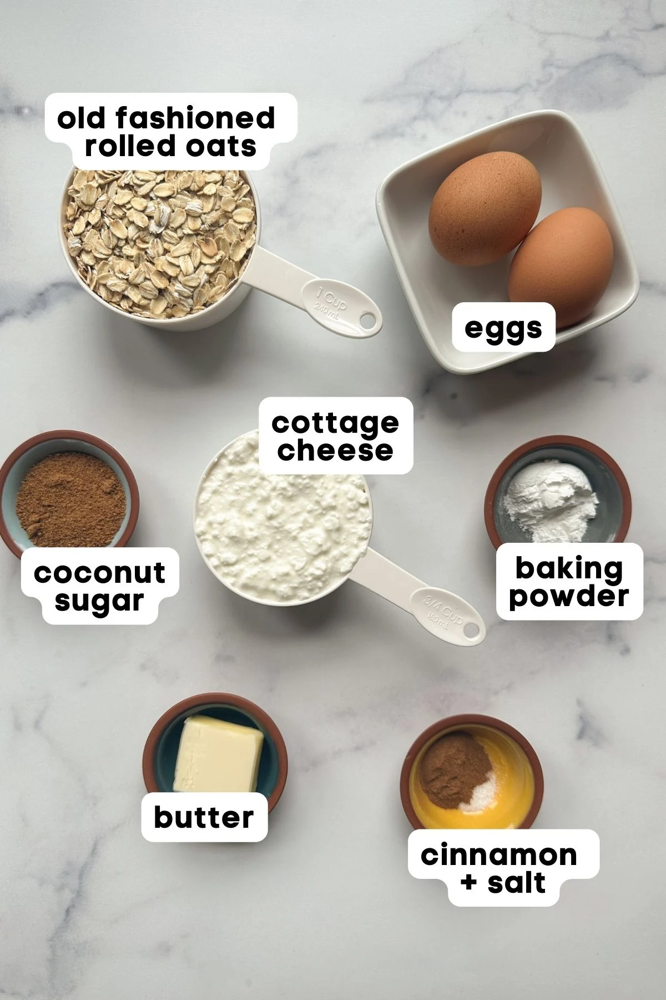

Cottage Cheese Oatmeal Pancakes are fluffy, easy to make and healthy. Each serving has about 14 grams of protein!
Preparation time
5 mins
Cook time
6 mins
Servings
3 people

Ingredients
¾ cup small curd cottage cheese - It doesn't matter what fat percentage you use.
1 cup old fashioned rolled oats
2 tablespoons coconut sugar - or white sugar
1 teaspoon ground cinnamon
¼ teaspoon salt
2 teaspoons baking powder
½ tablespoon butter

Instructions
Add all of the ingredients except for the butter to a high speed blender.
Blend for about 15-20 seconds just until everything is incorporated. Don’t over blend or the pancakes can become tough. Let the batter rest for 5 minutes.
Heat a pan on medium low heat. Add some butter to the pan. Spoon the batter onto the pan. Spread it around to form a circle. The batter will be thick. You can make the pancakes bigger or smaller - whatever you prefer.
Cook the pancakes on medium low heat for 2-3 minutes per side. Reduce the heat if pancakes start to brown too quickly. Once the pan starts to get dry, add more butter. You don't want the pan to get dry or you won't achieve those crispy pancake edges.
Place the cooked pancakes on a wire cooling rack as you are cooking the rest of them. Serve with toppings of choice!